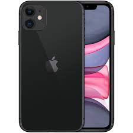

{kind=link}
Apple and Samsung's battle in the smartphone market pits two digital behemoths against one another. Apple delivers a curated ecosystem with iconic designs, a nice user experience, and a big App Store. Apple is renowned for its seamless integration of hardware and software. Samsung, on the other hand, offers a variety of models that cater to different tastes and frequently come equipped with cutting-edge screens and hardware innovation. Samsung places a strong emphasis on customisation and variety with its Android-based devices whereas Apple emphasises a seamless user experience. The decision between Apple and Samsung depends on personal preferences, with Samsung appealing to customers who value variety and technological innovation and Apple appealing to those looking for a polished, closely connected ecosystem.
Be Technical With Nitish

Apple's flagship smartphone, the iPhone 11, combines performance, photographic skill, and user-friendly design in a compelling way. The iPhone 11 features a 6.1-inch Liquid Retina HD display and an A13 Bionic CPU for fluid multitasking and slick visuals. With features like Night mode and Smart HDR, its dual-camera system with 12-megapixel wide and ultra-wide lenses offers remarkable photographic capabilities. The iPhone 11 is a well-liked option for people looking for a dependable and feature-rich smartphone experience because it embraces the ecosystem of iOS, enables Face ID for secure identification, has a long battery life, and offers a variety of colorful colors.
The progression of Apple's flagship smartphones is demonstrated by the comparison between the iPhone 14 Pro Max and iPhone 15 Pro Max. With its sophisticated camera system, which offers increased computational photography capabilities and improved low-light performance, the iPhone 14 Pro Max makes significant enhancements. It delivers excellent processing power and efficiency thanks to the most recent A16 Bionic CPU. The iPhone 15 Pro Max, on the other hand, lifts the bar even higher with enhancements like a camera system that is even more advanced, utilizing computational advances for spectacular image quality and augmented reality experiences. The iPhone 15 Pro Max offers a significant boost with a bigger battery, quicker 5G connection, and an opulent design, emphasizing Apple's dedication to pushing the limits of technology and user experience.
In the smartphone market, Motorola phones represent the perfect fusion of dependable performance and reasonable price. Motorola devices are renowned for their user-friendly interface and pure Android experience, and they provide a variety of alternatives to meet various demands. Motorola phones usually have slick designs, colorful displays, and long-lasting batteries, from budget-friendly versions with respectable capabilities to mid-range and even premium offerings. While not always at the cutting edge of technology, Motorola phones frequently concentrate on providing dependable performance and necessary features, making them an affordable option for a wide range of consumers.

The contrast between Motorola handsets and the iPhone 6s reveals several strategies used in the mobile industry. An Apple classic, the iPhone 6s has a luxury design, continuous software updates, and a well-integrated ecosystem. It has a small 4.7-inch Retina display and 3D Touch capabilities. As opposed to this, Motorola smartphones, known for their value-driven products, frequently prioritize customizable Android experiences, expandable storage, and a range of price points, with models like the Moto G series exhibiting svelte designs and dependable performance. Motorola phones appeal to users on a tight budget looking for a compromise between price and features, in contrast to the iPhone 6s which places an emphasis on brand loyalty and a refined user experience.
The Samsung Galaxy S23 Ultra's large 200MP camera and other upgrades aim to advance smartphone photography. And based on my testing, almost every aspect of this flagship, including the camera system, comes up to the expectations.
So what are the applications for 200 megapixels? For brighter, more detailed images, the sensor can combine 16 pixels into one. Alternatively, you may shoot in full 200MP mode, which provides you far more flexibility when it comes to cropping and resizing your images.